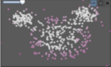

Combining Cluster and Outlier Analysis with Visual Analytics

Authors. Jürgen Bernard, Eduard Dobermann, Michael Sedlmair, Dieter Fellner
Venue. EuroVA (2017)
Abstract. Cluster and outlier analysis are two important tasks. Due to their nature these tasks seem to be opposed to each other, i.e., data objects either belong to a cluster structure or a sparsely populated outlier region. In this work, we present a visual analytics tool that allows the combined analysis of clusters and outliers. Users can add multiple clustering and outlier analysis algorithms, compare results visually, and combine the algorithms’ results. The usefulness of the combined analysis is demonstrated using the example of labeling unknown data sets. The usage scenario also shows that identified clusters and outliers can share joint areas of the data space.